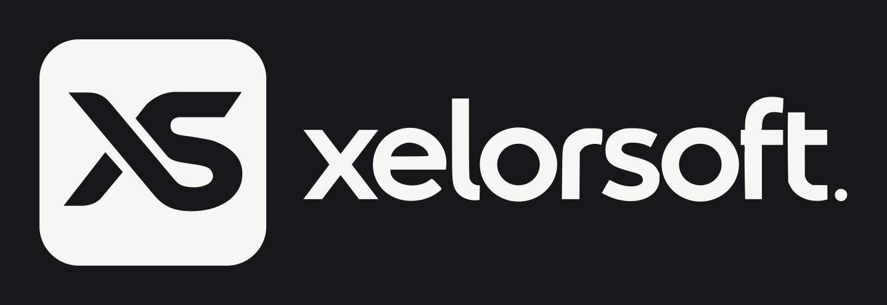

XS GYM / IN DEVELOPMENT
Run your gym simply. Know your numbers accurately.
Members, memberships, attendance, payments and reports in one app for phone, tablet and laptop. This page tracks the build; the app itself is not live yet.
BUILD PROGRESS
- 00Discovery and planIn review
- 01Pilot gym requirements and wireframesNext
- 02Architecture and threat modelPlanned
- 03Foundation: sign-in, tenant shell, CIPlanned
- 04Members, memberships, attendance, payments, expenses, reportsPlanned
- 05Mobile, tablet and installable appPlanned
- 06–07AI assistant and voicePlanned
- 08–10Subscription, testing, launchPlanned